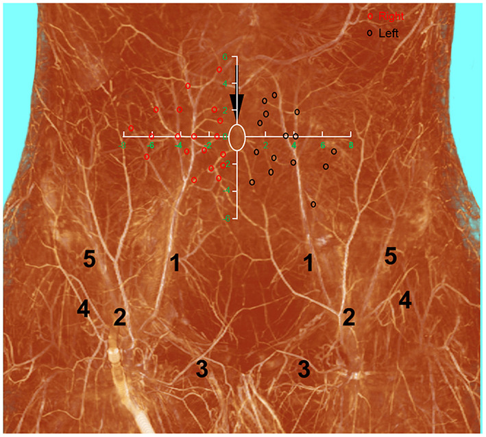
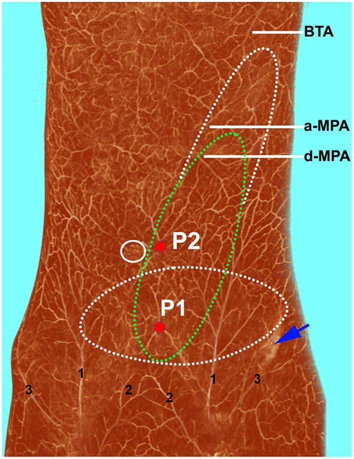

下腹部の皮膚と脂肪を、腹直筋（ふくちょくきん＝おなかの正面を縦に走る筋肉）を一切取らずに移せることを示した論文です。筋肉を貫いて皮膚へ立ち上がる細い枝＝穿通枝（せんつうし）だけを血流の茎（けい＝皮弁を養う血管の幹）にする、という発想を臨床で示した最初の報告とされ、のちに「穿通枝皮弁（perforator flap）」と呼ばれる考え方の起点になりました。乳房再建で広く使われる DIEP 皮弁（深下腹壁動脈穿通枝皮弁）の原型でもあります。
背景 ― TRAM皮弁の利点と、その裏返しの欠点
この論文が書かれた当時、下腹部の皮膚と脂肪を移す代表的な方法は TRAM 皮弁（横軸腹直筋皮弁＝Hartrampf らが1982年に報告した、腹直筋を皮膚・脂肪ごと移す皮弁）でした。原著の冒頭でも、腹直筋皮弁には多くの利点がある、と述べられています。
しかし著者は、その欠点もよく知られていると指摘します。抄録に挙げられているのは2つで、ひとつは腹壁ヘルニア（ふくへきヘルニア＝筋肉を取った跡の腹壁が弱くなり、腸などが皮下へ飛び出してくること）が起こりうること。もうひとつは、状況によっては皮弁がかさばる（bulk＝筋肉がついている分ぶ厚くなる）ことです。
つまり「筋肉を一緒に取ること」そのものが、採取した側（提供部）の障害と、移した先での厚みという二重の代償を生んでいました。この論文は、その代償をなくせないか、という問いから出発しています。
この論文がしたこと
著者は、腹直筋を付けずに下腹部の皮膚だけを挙げる皮弁 ―「腹直筋を伴わない下腹壁動脈皮弁（inferior epigastric artery skin flap without rectus abdominis muscle）」を報告しました。
血流の茎として使ったのは、抄録によれば「筋穿通枝（muscle perforators＝腹直筋の中を貫いて皮膚へ立ち上がる枝）」と「近位の深下腹壁動脈（proximal inferior deep epigastric artery＝穿通枝の根元につながる、体の中心寄りの本幹）」です。筋肉そのものは持って行かず、筋肉の中を通る血管だけを追いかけて取り出す、という発想です。
この方法を、著者は2例の患者に用いたと報告しています。
解剖と手技の要点
下腹部の皮膚は、深下腹壁動脈（しんかふくへきどうみゃく＝下腹部の腹直筋の裏側を上っていく動脈）から枝分かれし、腹直筋の中を貫いて皮膚へ出てくる穿通枝によって養われています。従来の TRAM 皮弁は、この穿通枝を筋肉ごとまとめて持っていくことで血流を確保していました。
この論文の要点は、その穿通枝を筋肉から丁寧に剥がし（筋線維の間を割って追いかけ）、血管だけを根元の深下腹壁動脈まで露出させれば、筋肉は体に残したまま皮膚と脂肪を挙げられる、という点にあります。血流の入口が「筋肉ごとの太い塊」から「細い枝1本」に置き換わるわけです。
そして抄録が明言する核心が、「大きな皮弁が、たった1本の筋穿通枝で生存しうる（A large flap without muscle can survive on a single muscle perforator）」ということでした。細い枝1本で広い皮膚が生きるという事実が、以後の穿通枝皮弁すべての前提になります。


結果
抄録に記されている成績は簡潔です。この腹直筋を伴わない下腹壁動脈皮弁を2例の患者に用いたこと、そして筋肉を伴わない大きな皮弁が単一の筋穿通枝で生存しうること ― この2点です。症例数・生着率などの詳しい数字は抄録には示されていません。
なお後年の総説では、この2例は口腔底（こうくうてい＝口の中の底、舌の下の部分）と鼠径部（そけいぶ＝脚の付け根）の再建であったとされます。
わずか2例の報告ですが、「筋肉は残せる」「細い枝1本で足りる」という原理が実際の患者で成立することを示した点に価値がある報告と位置づけられます。
意義 ― 穿通枝皮弁という概念の起点
この論文の意義は、特定の皮弁を1つ増やしたことではなく、皮弁の設計思想そのものを変えたことにあります。それまで皮弁は「どの筋肉を持っていくか」で語られていました。この報告以降は「どの穿通枝を選ぶか」で語れるようになります。筋肉は血流の運び屋ではなく、体に残せるものになったのです。
背景には、Taylor と Palmer が1987年に示したアンギオソーム（血管が支配する三次元の領域）の考え方があり、全身の血管領域が地図として整理されつつありました。本論文は、その地図の上で「領域の入口である穿通枝1本だけを使う」という実践を臨床で示したものと位置づけられます。
この下腹部の皮弁はのちに DIEP 皮弁（deep inferior epigastric perforator flap＝深下腹壁動脈穿通枝皮弁）と呼ばれるようになり、1994年に Allen と Treece が乳房再建に応用して広く普及させたとされます。腹直筋を温存できるため、腹壁ヘルニアや腹筋の力の低下を大きく減らせることから、自家組織（自分の体の組織）による乳房再建の標準的な選択肢のひとつとなりました。
同じ発想は他の部位にも広がりました。1995年に Angrigiani らが報告した胸背動脈穿通枝皮弁（TDAP／TAP皮弁）は、論文の題名からして「筋肉のない広背筋皮弁（Latissimus dorsi musculocutaneous flap without muscle）」であり、本論文と同じ問い（筋肉は本当に必要か）を別の部位で立て直したものと読めます。2004年に Wei と Mardini が示したフリースタイル皮弁（超音波ドップラーで拾った穿通枝の信号を頼りに、任意の部位から皮弁を挙げる考え方）は、この路線の延長線上にあるとされます。
手の外科でも、1990年の Quaba と Davison による背側中手動脈穿通枝皮弁（DMAP皮弁）が、本論文の穿通枝皮弁の概念と結びつけて理解されるようになりました。日本発のこの2例報告は、こうして再建外科全体の共通言語になったといえます。
この論文の要点
- 腹直筋皮弁（TRAM）の欠点＝腹壁ヘルニアの可能性と、状況によってはかさばること、を克服するために構想された皮弁。
- 腹直筋を付けず、筋穿通枝と近位の深下腹壁動脈を茎とする下腹壁動脈皮弁を報告した。
- 2例の患者に用いた（抄録に記載されているのはこの症例数のみ）。
- 筋肉を伴わない大きな皮弁が、単一の筋穿通枝で生存しうることを示した ― 以後の穿通枝皮弁すべての前提となる観察。
- のちに DIEP 皮弁と呼ばれ、1994年の Allen & Treece により乳房再建へ普及したとされる。穿通枝皮弁という概念の起点となった日本発の報告。
用語ミニ辞典
- 穿通枝（せんつうし）
- 深部の動脈から、筋肉や筋膜を貫いて（穿通して）皮膚へ立ち上がってくる細い枝。この枝1本を茎にして挙げる皮弁が穿通枝皮弁。
- 穿通枝皮弁（perforator flap）
- 筋肉を体に残したまま、穿通枝だけを血流の茎として皮膚と脂肪を挙げる皮弁。本論文がその概念の起点とされる。
- 深下腹壁動脈
- 下腹部で腹直筋の裏側を上っていく動脈。ここから枝分かれした穿通枝が、下腹部の皮膚を養う。DIEP皮弁の「DIE」はこの動脈のこと。
- TRAM皮弁（横軸腹直筋皮弁）
- 下腹部の皮膚・脂肪を腹直筋ごと移す皮弁（Hartrampfら 1982）。本論文が克服しようとした、筋肉を犠牲にする方式。
- 腹壁ヘルニア
- 腹直筋を採取した跡などで腹壁が弱くなり、腸などが皮下へ飛び出してくること。筋肉を取る皮弁の代表的な合併症。
- 皮弁の茎（pedicle）
- 皮弁を養う血管の幹。ここを通じて血液が出入りする。本論文では筋穿通枝と近位の深下腹壁動脈がこれにあたる。
- DIEP皮弁
- 深下腹壁動脈穿通枝皮弁（deep inferior epigastric perforator flap）。本論文の皮弁がのちにこう呼ばれ、乳房再建の主力となった。
- ペルフォラソーム
- 1本の穿通枝が受け持つ皮膚・皮下の縄張り。隣の縄張りとは細い連絡血管でつながっており、枝1本でも広い範囲が生き残る根拠となる。
- アンギオソーム
- 1本の源動脈が支配する、皮膚から骨までの三次元の血管領域（Taylor & Palmer 1987）。穿通枝皮弁の理論的な下敷きとなった概念。
本ページは形成外科の学習・参照を目的とした編集部によるオリジナルの日本語解説で、原著（英語）の逐語訳・全文転載ではありません。正確な内容・数値・図は必ず上記リンク先の原著をご確認ください。
掲載している図は、原著の図ではありません。原著の図は出版社が著作権を持ち転載できないため、同じ術式・同じ解剖を扱った無料公開（オープンアクセス／CC BY）論文の図を、出典とライセンスを明記して引用しています。